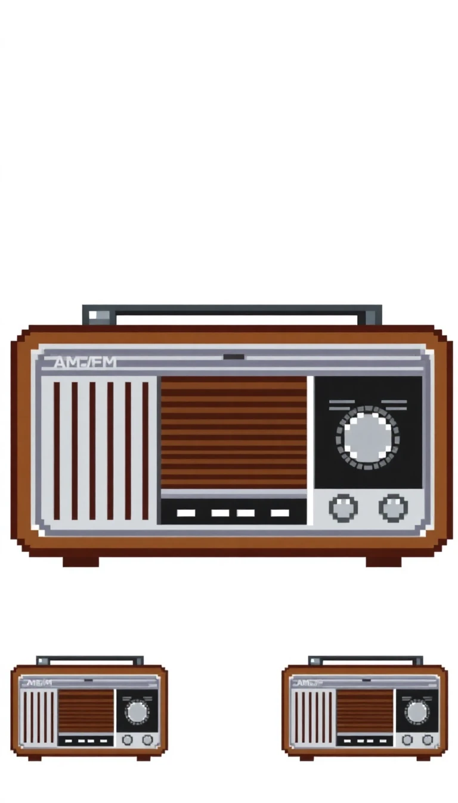
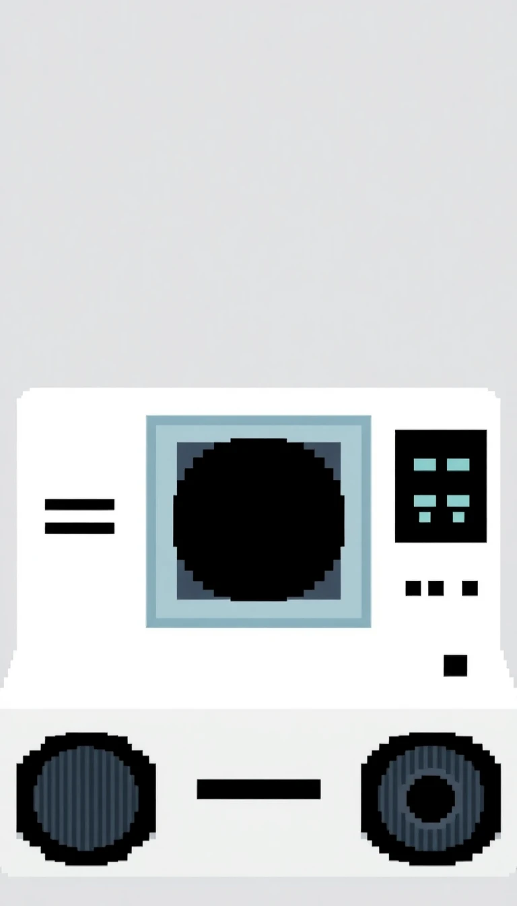
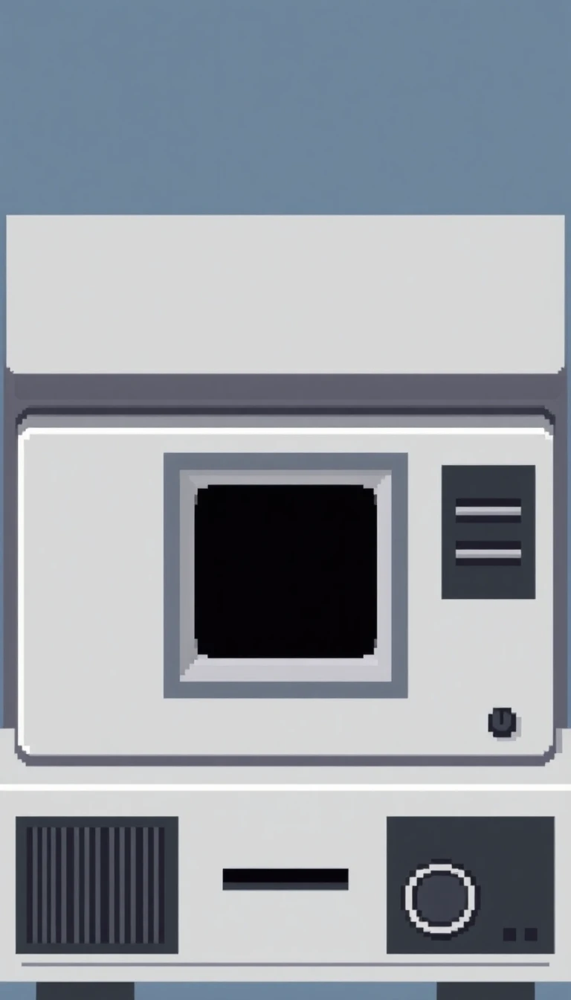
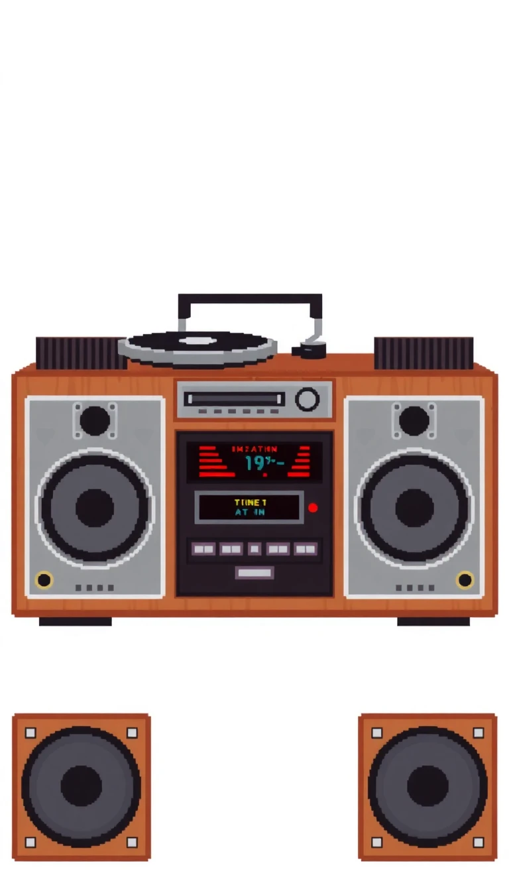
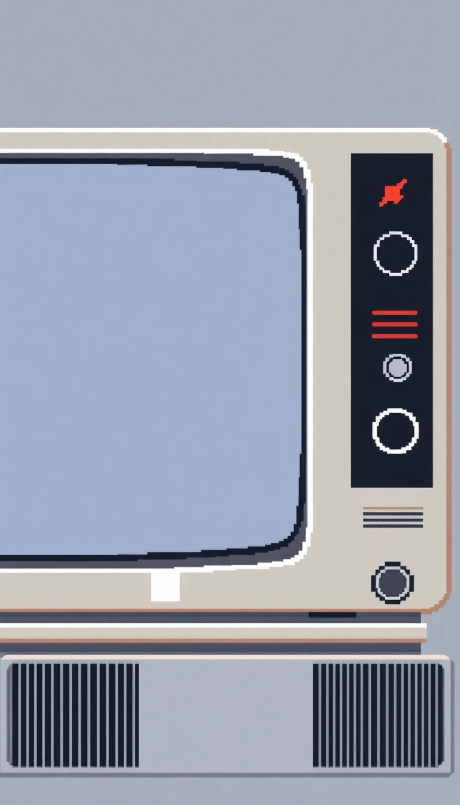
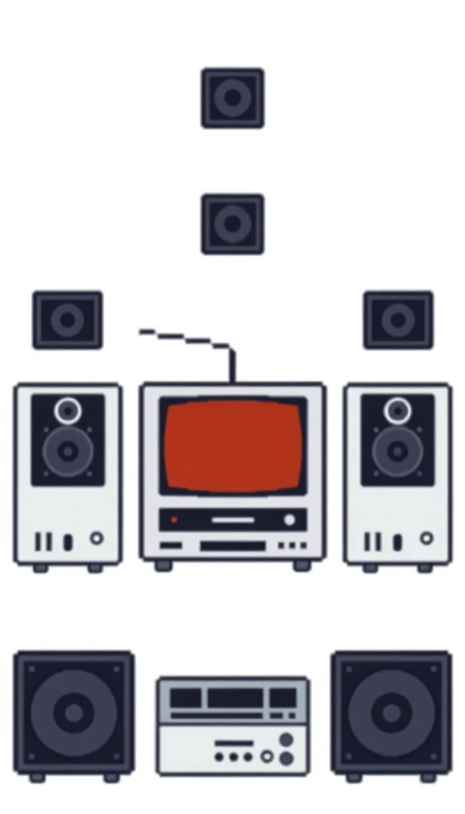

Haushaltsgeräte und Elektronik
Innovative Lösungen für Ihren Alltag von Dougtone Konsumprodukt. Seit den 1960er Jahren setzen wir Maßstäbe in Design und Funktionalität.
1. Dougtone Zenith Radio Receiver (1960)
Ein schlankes, modernes AM/FM-Radio mit verchromter Oberfläche, entworfen, um perfekt in moderne Wohnzimmer der Mitte des Jahrhunderts zu passen. Verfügt über High-Fidelity-Klang, eine elegante Skalenanzeige und den charakteristischen, leichtgängigen Abstimmknopf. Erhältlich in verschiedenen Ausführungen: Nussbaum, Kirschholz und Ebenholz.
Preis: 249,- DM
2. Dougtone Telecast 1000 TV Receiver (1962)

Ein hochmodernes 19-Zoll-Schwarz-Weiß-Fernsehgerät mit kristallklarem Empfang und einem polierten Metallrahmen. Enthält die DougTone-eigene ClearView-Technologie für verbesserte Signalqualität. Berühmt für sein kühnes, kantiges Design, war dies das Fernsehgerät der Wahl in den Wohnzimmern wohlhabender Familien.
Preis: 899,- DM
3. DougDisc Video Player (1965)
Dougtone’s Antwort auf den Videophonographen, der ein hochmodernes DougDisc-System (eine frühe Version dessen, was sich zum modernen DVD-Format entwickeln sollte) nutzte. Das System spielte 12-Zoll-DVD-ähnliche Discs, jedoch mit einer glatteren, haltbareren Oberfläche. In Verbindung mit hochwertigen Displays bot es tadellose Ton- und Videowiedergabe. Erhältlich in den klassischen Optionen Weiß, Schwarz und Petrol.
Preis: 1199,- DM (inkl. 5 Demo-Discs)
4. DougDRM Video Player (1968)
Der erste Videoplayer, der High-Definition-Qualität ins Heimkino brachte. Der DougDRM-Player arbeitet mit einem fortschrittlichen Kassetten-basierten System (dem Vorläufer von Videorekordern) und bietet für seine Zeit eine atemberaubende Bildschärfe. Wird mit einer Auswahl früher Filme und Fernsehspecials auf DougDRM-Kassetten geliefert, einschließlich exklusiver Inhalte, die nur DKP-Benutzern zur Verfügung stehen.
Preis: 1499,- DM
5. Dougtone "Stereo Echo" Hi-Fi System (1970)
Ein erstklassiges All-in-One-Stereosystem, das einen Plattenspieler, ein AM/FM-Radio und einen integrierten DougDisc-Player kombiniert, um ein üppiges und umhüllendes Klangerlebnis zu bieten. Ausgestattet mit fortschrittlicher Stereotechnologie und einem 4-Lautsprecher-Setup schuf dieses System eine immersive Audioumgebung in jedem Haus.
Preis: 1899,- DM
6. Dougtone “VistaVision” Color Television (1972)
Dougtone’s erstes Farbfernsehgerät, das mit einem großen 25-Zoll-Bildschirm, voller Farbübertragungsunterstützung und der VistaScope-Technologie, die Helligkeit und Kontrast automatisch anpasst, aufwartete. Dies ist ein kühnes, modernes Gerät, untergebracht in einem stilvollen Nussbaumfurniergehäuse, das der wachsenden Nachfrage nach Heimunterhaltung gerecht wurde.
Preis: 2199,- DM
7. Dougtone "DynaWave" Radio Alarm Clock (1974)
Ein stilvoller, kompakter Radio-Wecker mit AM/FM-Tuner und Weckfunktion. Entworfen für das trendige Zuhause der 1970er Jahre, war er in lebendigen Farben wie Orange, Avocadogrün und Senfgelb erhältlich. Der DynaWave bot sowohl traditionelles Radio als auch einen frühen Versuch der digitalen Zeitanzeige.
Preis: 129,- DM
8. DougTelevision 3000 (1976)
Ein hochmodernes 30-Zoll-Farbfernsehgerät mit Stereoton, ausgestattet mit einem eingebauten DougDRM-Player für mühelose Videowiedergabe. Dieses Modell führte die SmartTune-Funktion ein, die die Ton- und Bildqualität automatisch basierend auf der Raumumgebung optimierte. Die ultra-moderne, polierte Chromzierleiste verlieh ihm ein futuristisches Aussehen.
Preis: 2899,- DM
9. Dougtone "SpectraVision" Home Cinema System (1980)
Der frühe Vorläufer von Heimkinos, SpectraVision, war ein Premium-Produkt, das einen DougDRM-Videoplayer, ein Farbfernsehgerät und ein 5.1-Surround-Sound-Audiosystem kombinierte. Es ermöglichte Familien, Filme in Kinoqualität bequem von zu Hause aus zu genießen. Das modulare Design des Systems ermöglichte einfache Upgrades und machte es auf Jahre zukunftssicher.
Preis: Ab 4999,- DM (je nach Konfiguration)